分享｜第45窟北魏佛像的细节之美
05-18 ♡ 32 评论 12
 敦小妞
Lv.6
敦小妞
Lv.6
守护文明瑰宝 · 探索千年之美
一笔藏千年
一窟见万象
风起敦煌
藏一页光
飞天入梦
古卷微明
青绿未央
云纹绕指
万象成藏
回看一眼
烟岚入画
玉门春远
收藏总数
0 件探索藏洞
0 个学习时长
0 小时获得成就
0 枚社区互动
0 次像一面会呼吸的个人背景墙，收藏壁画、洞窟、丝路风景与每一次探索留下的光。
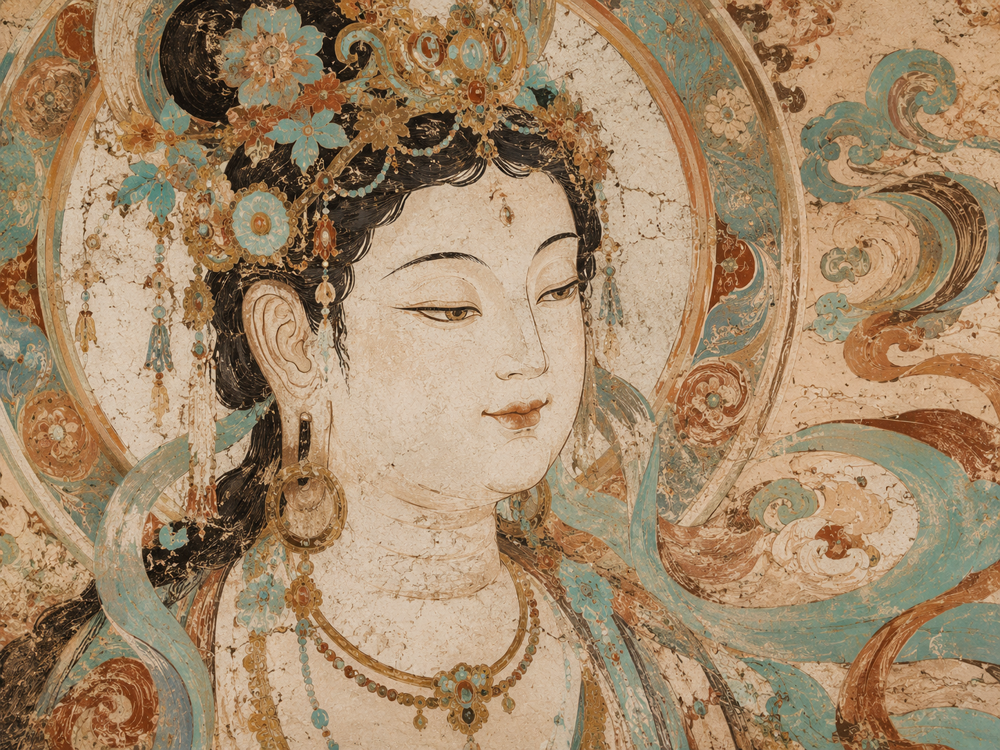
初唐壁画的暖金、青绿与人物衣褶，都适合成为今日封面。

云气像从壁面掠过，给藏库留下一段轻盈的飞行轨迹。

故事感更强的一张，适合用作个人主页的情绪背景。

把云游洞窟里最有仪式感的一帧收进私人影壁。
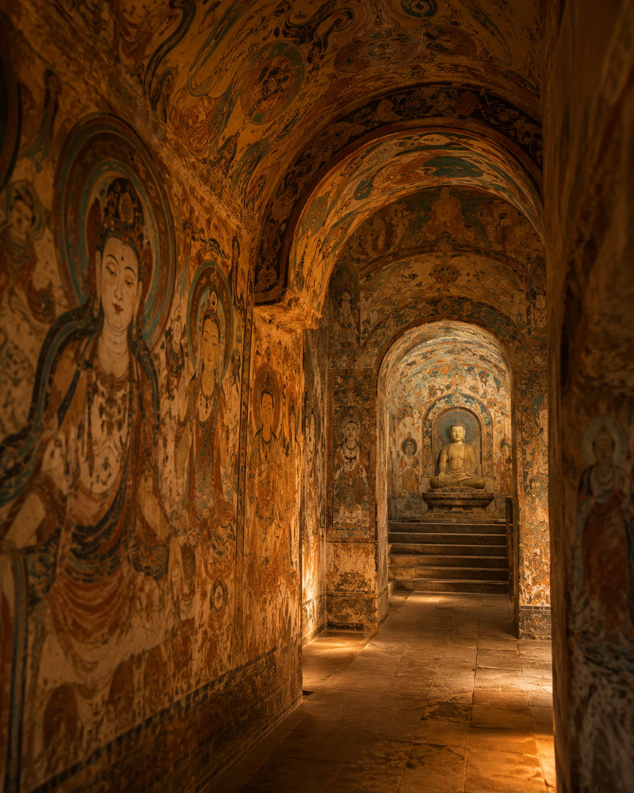
更接近沉浸式展厅的视觉，适合作为藏库的科技感封面。
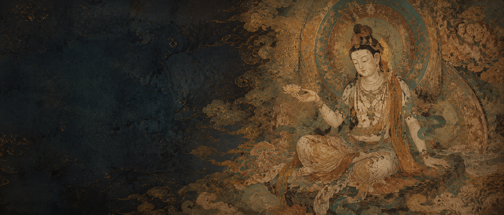
横向构图像展开的长卷，让个人空间有博物馆感。

来自云境的洞窟图像，把探索路径也变成可展示的收藏。
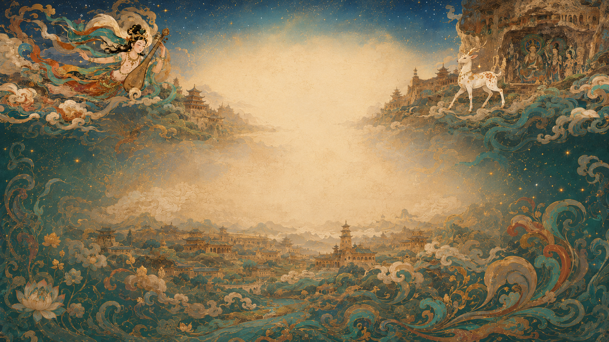
从敦煌溯源里抽出的远景，给个人藏库留一口辽阔的气。
右侧记录灵感，左侧自动生成笔记牌堆轮转

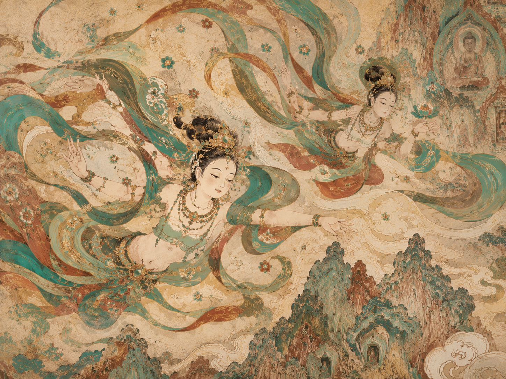
入口处光线偏暗，壁面色彩从赭石过渡到青绿，人物队列的衣褶像连续的波纹，适合整理成“洞窟观看路线”。
这组配色最适合做个人藏库封面。青绿负责轻盈，朱砂压住视觉重心，淡金像壁画边缘被灯光扫过。
沿路线点亮收藏过的洞窟，用一条金色轨迹串起学习、社区发布和游戏成就，形成可分享的个人敦煌手账。
初唐 · 壁画
中唐 · 经变画
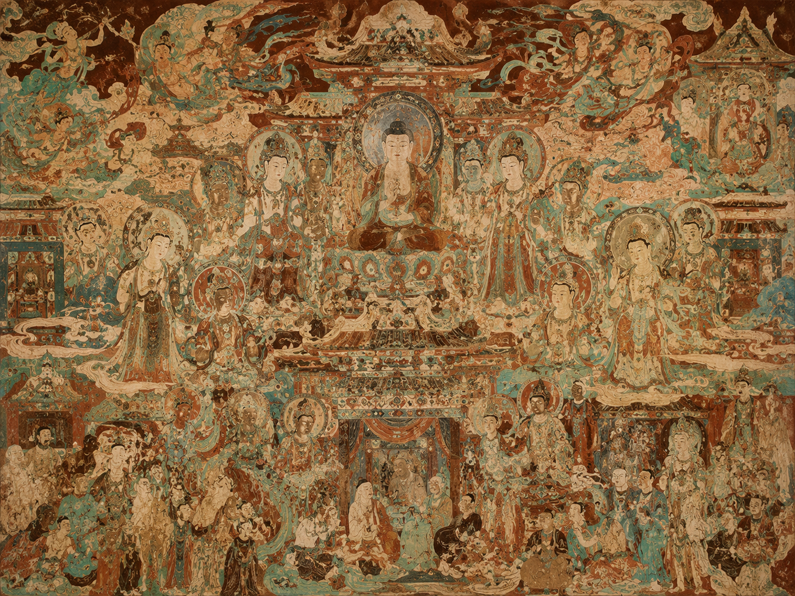
北魏 · 佛像
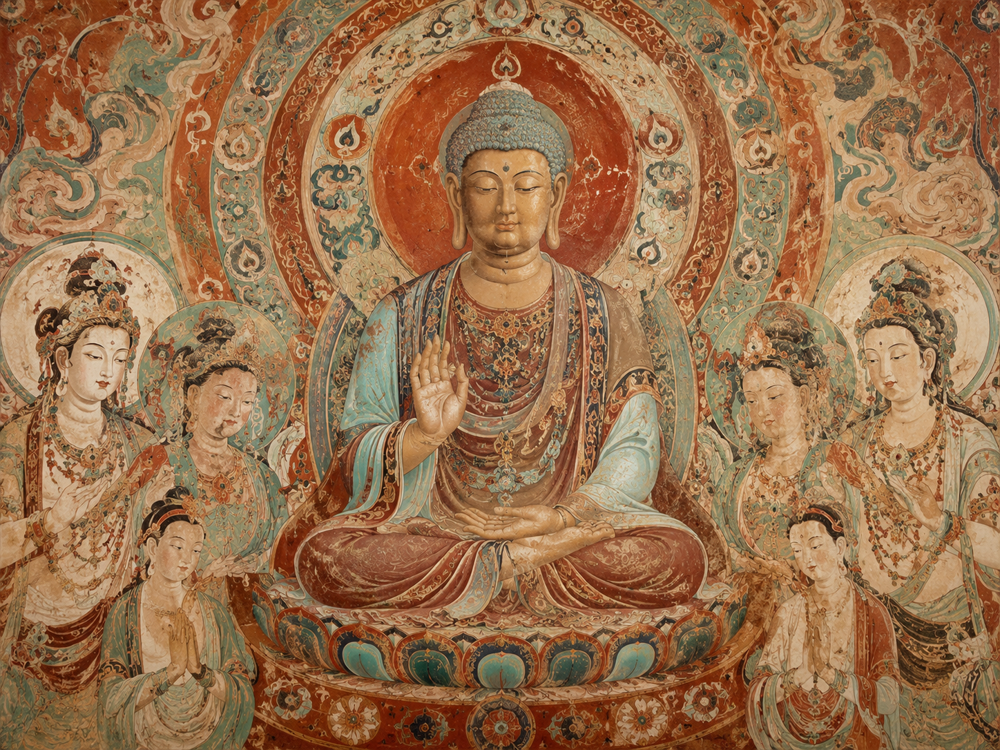
西夏 · 壁画

初唐 · 经变画
西魏 · 洞窟
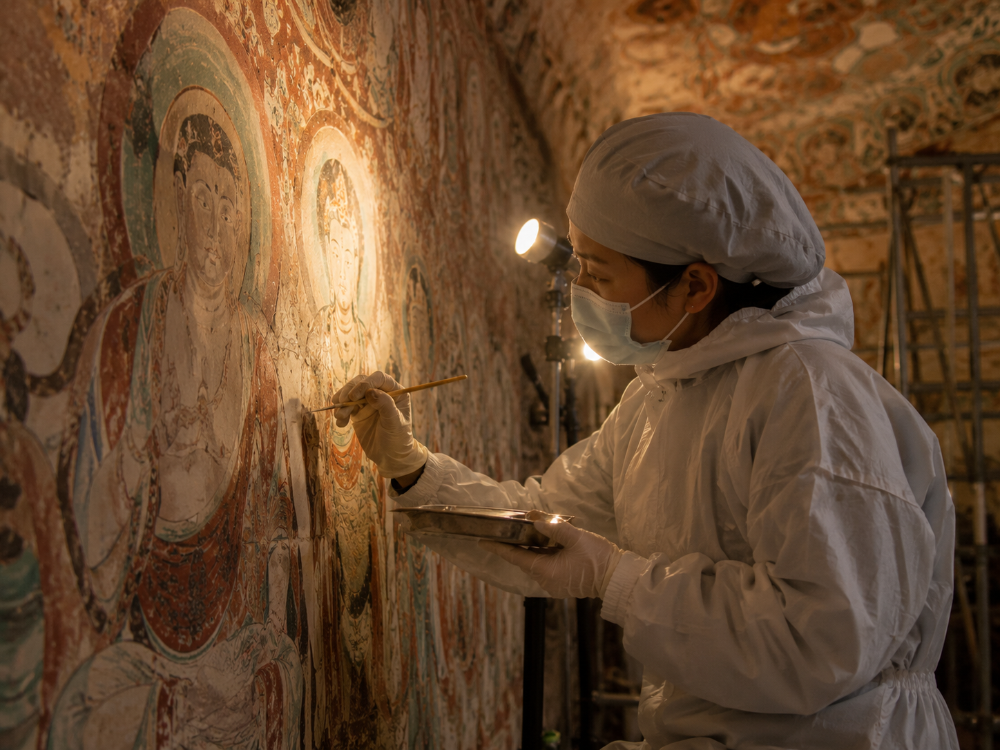
现代 · 数字保护

丝路 · 图像谱系
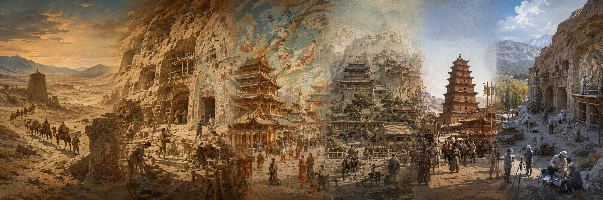

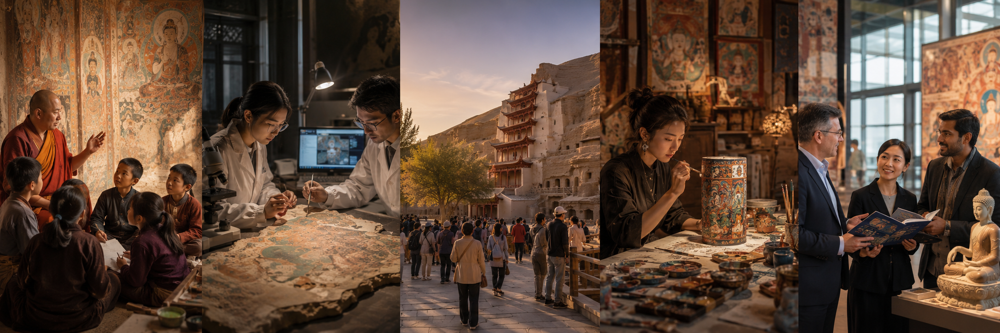
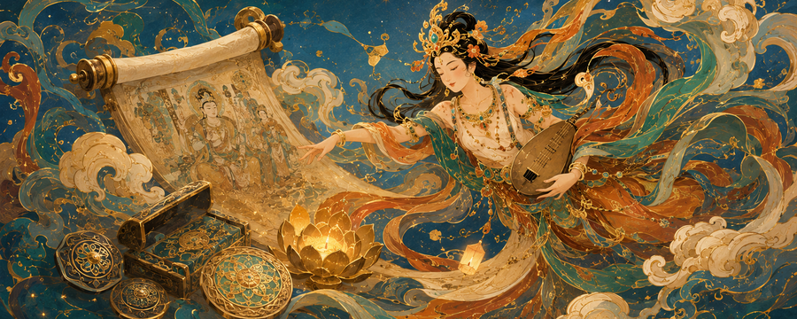
系统把你的收藏、云游、学习和互动整理成一条可回放的丝路长卷。
从印度天人、龟兹乐舞到敦煌飞天，追踪形象如何在丝路上生长。
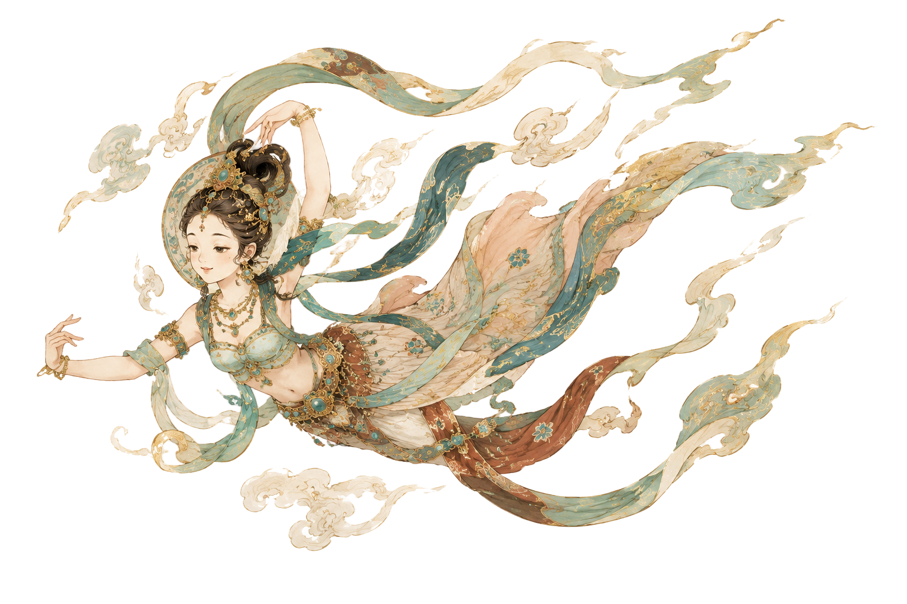
课程学习
14课时知识点收藏
68个笔记记录
36条问答互动
12次累计签到30天，并完成3次数字修复互动。
探索10个藏洞
收藏50件壁画
学习20门课程
累计签到30天
05-18 ♡ 32 评论 12
05-17 ♡ 18 评论 6
今日 ♡ 46 评论 9
你的探索足迹已延伸至36个藏洞，学习时长超过同龄人85%的用户，继续加油，文明因你而闪耀！
解锁专属皮肤，让灵犀陪伴你更深入地探索敦煌之美。